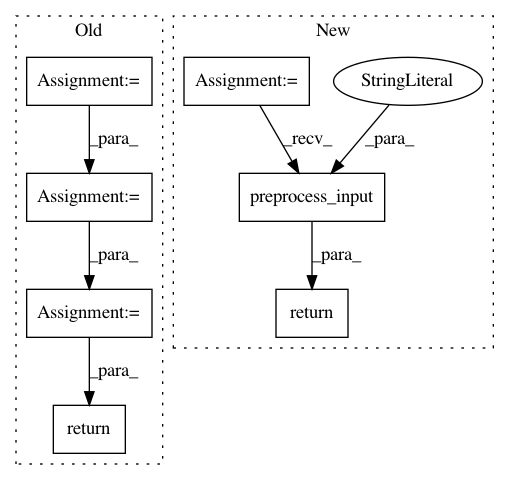

0b3dc16b603a549a20f4a92447c79042fecd0c0b,keras/applications/mobilenet.py,,preprocess_input,#Any#,86
Before Change
def preprocess_input(x):
x /= 255.
x -= 0.5
x *= 2.
return x
class DepthwiseConv2D(Conv2D):
Depthwise separable 2D convolution.
After Change
// Returns
Preprocessed array.
return imagenet_utils.preprocess_input(x, mode="tf")
class DepthwiseConv2D(Conv2D):
Depthwise separable 2D convolution.
In pattern: SUPERPATTERN
Frequency: 4
Non-data size: 7
Instances
Project Name: keras-team/keras
Commit Name: 0b3dc16b603a549a20f4a92447c79042fecd0c0b
Time: 2017-09-08
Author: francois.chollet@gmail.com
File Name: keras/applications/mobilenet.py
Class Name:
Method Name: preprocess_input
Project Name: keras-team/keras
Commit Name: 0b3dc16b603a549a20f4a92447c79042fecd0c0b
Time: 2017-09-08
Author: francois.chollet@gmail.com
File Name: keras/applications/inception_resnet_v2.py
Class Name:
Method Name: preprocess_input
Project Name: keras-team/keras
Commit Name: 0b3dc16b603a549a20f4a92447c79042fecd0c0b
Time: 2017-09-08
Author: francois.chollet@gmail.com
File Name: keras/applications/inception_v3.py
Class Name:
Method Name: preprocess_input
Project Name: keras-team/keras
Commit Name: 0b3dc16b603a549a20f4a92447c79042fecd0c0b
Time: 2017-09-08
Author: francois.chollet@gmail.com
File Name: keras/applications/xception.py
Class Name:
Method Name: preprocess_input